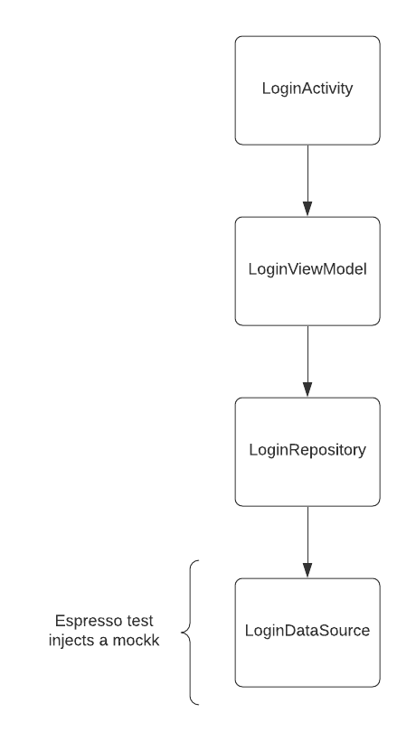
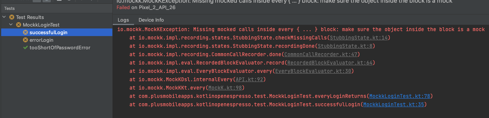

Mockk Test
The first strategy to discuss when it comes to mock testing in Android is replacing a dependency in the app with a mock using Mockk. With this approach, it helps to look at a diagram of the app architecture to better understand what is actually being tested and what can be controlled with a mock. To try to maximize the test coverage of the app and control the source of data, the LoginDataSource is what will be replaced with a mock to ensure consistent test data.

Note
One could just as easily replace the LoginRepository or the LoginViewModel with a mock in a test, however consider what the test itself is actually testing when replacing layers of the architecture at a higher level. This sort of approach might be more feasible if there is confidence in the unit test coverage in the repository or ViewModel, although mocking the network source is usually the best approach to test the integration of every layer in an app.
MockK Test Setup
To setup the project for a Mockk test, a dependency injection framework such as Hilt will be helpful to easily swap out dependencies in the app with mocks. Since the purpose of this tutorial is not to deep dive into Hilt or Mockk, the setup of Hilt can be found in this commit and Mockk simply requires this one line in the app build.gradle.
androidTestImplementation "io.mockk:mockk-android:1.12.0"
Write a Login Error Test
To start writing a Hilt Espresso test, we need to add the @HiltAndroidTest annotation to the test class and declare a Hilt rule.
@HiltAndroidTest
class MockkLoginTest {
@get:Rule
var hiltRule = HiltAndroidRule(this)
}
Now to override the LoginDataSource with a mockk, we can declare a mock as a property and annotate with the @JvmField and @BindValue to override the mock in the dependency graph.
@BindValue
@JvmField
val loginDataSource: LoginDataSource = mockk(relaxed = true)
Finally in a test, the data source can be mocked out with an error response and validates the user is shown the error.
@Test
fun errorLogin() {
val expectedError = "Something bad happened"
every { loginDataSource.login(email, password) } returns Result.Error(IllegalArgumentException(expectedError))
val scenario = launchActivity<LoginActivity>()
startOnPage<LoginPage> {
enterInfo(email, password);
onSignInOrRegisterButton().click()
onErrorMessage().verifyText(expectedError).verifyVisible()
}
scenario.close()
}
This is pretty much the basis for writing an Espresso mock test with Mockk. So if you were to update the successful login test, how would you rewrite the other login test to return something dynamic?
- enter info on the login page and submit
- verify the welcome greeting display name
- verify navigation to the settings
Answer
@Test
fun successfulLogin() {
every { loginDataSource.login(email, password) } returns Result.Success(LoggedInUser("some-user-id", displayName))
val scenario = launchActivity<LoginActivity>()
startOnPage<LoginPage> {
enterInfo(email, password)
}.goToLoggedInPage {
onWelcomeGreeting().verifyText("Welcome $displayName!")
}.goToSettings()
scenario.close()
}
- Add mockk and mock tests commit - contains all the code for tests added in this section
Pre Android Pie (API 28) mocking
Up until this point the app will run fine on Android P and above, however there are some limitations to Mockk mocking final classes in Espresso before that. Running the test on an emulator lower than API 28 will result in the following error caused by the mocking call.

If you are writing an Android app that has a minimum SDK less than Android P and need to mock a final class in a test. The recommended approach on the Mockk Android page is to use Dexopener, however if you look on the project readme you will see:
Quote
DexOpener will do the following things at runtime:
- Remove the final modifier from the classes belonging to the specified package
- Create dex files to make the application class loader load those classes
However, they are not so lightweight. If you would like to save even a little testing time of your Kotlin app, you can introduce the all-open compiler plugin instead of DexOpener.
So to keep the mock tests as performant as possible we will use the Kotlin all open compiler which will only open up classes marked with an annotation on debug builds. The first thing to use the all open compiler is to create an annotation class which can then be used to mark classes desired to be opened for testing.
package com.plusmobileapps.kotlinopenespresso
annotation class OpenForTest
Now that there is an annotation class to mark tests for open, the open compiler dependencies need to be added to the project and instructed which annotation should be used to know which classes to open.
// root build.gradle
buildscript {
dependencies {
classpath "org.jetbrains.kotlin:kotlin-allopen:$kotlin_version"
}
}
// app build.gradle
allOpen {
annotation("com.plusmobileapps.kotlinopenespresso.OpenForTest")
}
At last mark the final class needing to be mocked with the new annotation and the test should now run on pre Android P devices!
@OpenForTest
class LoginDataSource @Inject constructor() {}
Warning
Mockk tests are a good start for writing some mock Espresso tests, however this approach does completely swap out the implementation detail of LoginDataSource. If you looked more closely at all the changes, you might have noticed that the implementation of LoginDataSource is actually still returning a hardcoded display name. This was intentional to showcase that this approach does have some short comings because the test passes however in production it is not yet quite dynamic. The next section will explain another approach to mock testing that will simply mock the network traffic in the test to fully test the integration of everything in the app.